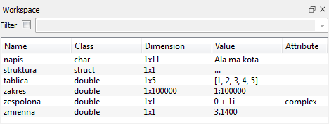

Zmienne w Octave¶
Octave staje się szczególnie użyteczny wtedy, gdy zamiast pojedynczych rachunków zaczynamy przechowywać dane w zmiennych, wektorach i macierzach oraz przetwarzać je za pomocą skryptów.
Definiowanie zmiennych¶
Zmienną definiujemy za pomocą operatora =:
W kursie będziemy najczęściej używać:
- skalarów,
- wektorów,
- macierzy,
- zakresów,
- napisów.
Typ i rozmiar zmiennej można później sprawdzić m.in. poleceniami class, size i whos.
Skalary¶
Skalar jest pojedynczą liczbą, np.:
Domyślnym typem liczbowym w typowych obliczeniach Octave jest liczba zmiennopozycyjna podwójnej precyzji (double).
Można to sprawdzić:
Octave obsługuje również inne typy liczbowe, np. liczby całkowite o określonej liczbie bitów:
Wektory¶
Wektor wierszowy można zapisać jako:
Przecinki pomiędzy elementami można często pominąć:
Do elementów odwołujemy się przez indeks w nawiasach okrągłych:
Octave numeruje elementy od 1, nie od 0.
Wektor można rozszerzać:
Jeżeli przypiszemy wartość elementowi znajdującemu się poza dotychczasowym końcem wektora, brakujące elementy zostaną wypełnione zerami.
Liczbę elementów zwraca funkcja:
Wektor kolumnowy definiujemy za pomocą średników:
Macierze¶
Macierz można zdefiniować, oddzielając elementy w wierszu przecinkami lub spacjami, a kolejne wiersze średnikami:
Podstawowe informacje o rozmiarze macierzy otrzymujemy poleceniami:
Dostęp do elementu w wierszu w i kolumnie k ma postać:
Przykład:
Dla Octave skalar można traktować jako macierz \(1\times1\), wektor wierszowy jako macierz \(1\times n\), a wektor kolumnowy jako macierz \(n\times1\).
Ta macierzowa organizacja danych jest jedną z najważniejszych cech Octave.
Zakresy¶
Zakresy ułatwiają tworzenie ciągów arytmetycznych:
Pierwszy zapis odpowiada ciągowi:
a drugi:
Ogólna postać to:
Jeżeli krok pominiemy, Octave przyjmuje krok równy 1.
Zakres nie jest jedynie wygodnym sposobem wpisania długiego wektora. Octave może przechowywać regularny ciąg opisany przez początek, krok i koniec w zwartej postaci, bez konieczności jawnego przechowywania każdego elementu. Dlatego zakresy są szczególnie wygodne przy pracy z długimi regularnymi ciągami.
Zakresy są szczególnie użyteczne przy:
- tworzeniu osi wykresów,
- indeksowaniu fragmentów wektorów i macierzy,
- generowaniu danych,
- wektoryzacji obliczeń.
Przykład wyboru fragmentu wektora:
Napisy¶
Napisy można zapisywać w cudzysłowie:
W praktyce napisy są przydatne m.in. jako etykiety wykresów, nazwy plików i argumenty wielu funkcji.
Transpozycja macierzy¶
Dla macierzy rzeczywistej operator ' wykonuje transpozycję:
Wynikiem jest:
Wektor wierszowy można więc łatwo zamienić na kolumnowy:
Dla danych zespolonych operator ' wykonuje sprzężenie hermitowskie, czyli transpozycję połączoną ze sprzężeniem zespolonym.
Zwykłą transpozycję bez sprzężenia zapisujemy jako .':
To rozróżnienie jest ważne przy pracy z macierzami zespolonymi.
Zapisywanie i wczytywanie danych¶
W bardziej rozbudowanych obliczeniach warto zapisywać wyniki pośrednie i końcowe do plików, aby można było później wrócić do pracy bez ponownego wykonywania wszystkich obliczeń.
Do zapisywania zmiennych służy polecenie save. W tym kursie będziemy korzystać przede wszystkim z binarnego formatu Octave:
Kilka zmiennych można zapisać jednocześnie:
Jeżeli nie podamy nazw zmiennych, Octave może zapisać cały bieżący zestaw zmiennych:
Dane wczytujemy poleceniem load:
Polecenie load odtwarza zapisane zmienne wraz z ich nazwami.
Jeżeli chcemy obejrzeć dane w zwykłym edytorze tekstu, możemy zapisać je w formacie tekstowym:
Octave obsługuje również inne formaty zapisu. Ich listę i składnię można sprawdzić poleceniem:
who i whos¶
Polecenie:
wyświetla nazwy aktualnie zdefiniowanych zmiennych.
Więcej informacji zwraca:
Dla każdej zmiennej można w ten sposób sprawdzić m.in.:
- nazwę,
- rozmiar,
- liczbę zajmowanych bajtów,
- klasę danych.
To bardzo przydatne podczas pracy z dużymi macierzami.
clear¶
Niepotrzebną zmienną można usunąć z pamięci:
Kilka zmiennych można usunąć jednocześnie:
Aby usunąć wszystkie zwykłe zmienne z bieżącego obszaru roboczego:
Octave GUI¶
W wersji graficznej szczególnie przydatne są panele:
- File Browser — pliki i katalog roboczy,
- Workspace — aktualnie zdefiniowane zmienne,
- Command History — historia wykonanych poleceń.
Panel Workspace pozwala szybko sprawdzić, jakie zmienne istnieją, jaki mają rozmiar i typ. Jest graficznym odpowiednikiem części informacji dostępnych przez who i whos.

Przykład panelu Workspace w graficznej wersji Octave.
Quiz¶
1. Czym różnią się w Octave następujące zmienne?
Czy mają tę samą wartość? Czy są reprezentowane w ten sam sposób?
2. Jak w Octave zapisuje się wektory wierszowe?
3. Jak w Octave zapisuje się wektory kolumnowe?
4. Czym różnią się następujące zmienne?
5. Jaki jest związek skalarów, wektorów wierszowych i wektorów kolumnowych z macierzami?
6. Co to są zakresy? Czym różnią się od jawnie zapisanych wektorów i dlaczego są wygodne?
7. Co to jest transpozycja macierzy? Jak oznacza się ją w Octave?
8. W jaki sposób można łatwo zamienić wektor kolumnowy w wierszowy i odwrotnie?
9. W jaki sposób zapisuje się zmienne Octave w zewnętrznych plikach?
10. W jaki sposób wczytuje się zmienne Octave z plików?
11. Jak zwolnić pamięć zajmowaną przez niepotrzebną zmienną?
12. Jak sprawdzić, jakie zmienne są aktualnie zdefiniowane, jaki mają rozmiar i ile pamięci zajmują?
Zadania¶
Zadanie 1. Utwórz wektor v o elementach 1, 2, 5, 10 i zapisz go w binarnym pliku Octave:
Zadanie 2. Zamknij Octave, uruchom go ponownie i wczytaj zapisany plik:
Sprawdź poleceniem who, że zmienna v została odtworzona.
Zadanie 3. Dla wektora v sprawdź działanie:
Zadanie 4. Utwórz wektor a = 10:10:100, a następnie za pomocą indeksowania zakresami wyświetl elementy od trzeciego do siódmego.
Zadanie 5. Pobierz przykładowy plik danych equation.mat, a następnie:
- wczytaj go do Octave,
- sprawdź nowe zmienne poleceniem
who, - zbadaj rozmiar zmiennej
Xza pomocąsize,columnsiwhos, - wyznacz najmniejszą, największą, średnią i medianę elementów
Xza pomocąmin,max,meanimedian, - narysuj
Xpoleceniemplot(X), - zapisz
Xdo pliku tekstowego poleceniemsave -texti sprawdź jego zawartość.